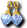
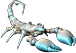

魔界村港｜1-1｜1-2｜諾克斯要塞
2-1｜2-2｜橋1｜3-1｜3-2｜橋2｜4-1｜4-2｜橋3｜5-1｜5-2｜橋4｜6-1｜6-2
魔王怪物：吉爾塔布里爾
金屬皮格
| 金屬皮格 | Lv | AC | MC | AAR | SAR | 掉落物品 |
| HP:92,500 | 85 | -34 | -38 | 10 | 26 |  猛毒、 猛毒、 猛烈之鐲 猛烈之鐲 |
| 經驗值 | 名聲值 | 金錢 | 攻擊屬性 | 防禦屬性 | ||
| 27812 | 5700 | 1744 | 土 | 土 | ||
| STR | DEX | INT | WIS | CON | ||
| 71 | 51 | 21 | 21 | 71 |
備註：瀕死時偶爾逃跑
金屬騎蟲皮格
| 金屬騎蟲皮格 | Lv | AC | MC | AAR | SAR | 掉落物品 |
| HP:117,915 | 90 | -39 | -51 | 20 | 30 | 猛毒、 沉滅之眼(雙手) 沉滅之眼(雙手) |
| 經驗值 | 名聲值 | 金錢 | 攻擊屬性 | 防禦屬性 | ||
| 178051 | 9600 | 2600 | 水 | 水 | ||
| STR | DEX | INT | WIS | CON | ||
| 91 | 61 | 41 | 41 | 91 |
備註：瀕死時偶爾逃跑
BOSS怪物
吉爾塔布莉露
| 吉爾塔布莉露 | Lv | AC | MC | AAR | SAR | 掉落物品 |
| HP:292,760 | 95 | -71 | -88 | 35 | 35 | 魔力石項鍊、  魔力石耳環、魔力石戒指、 戰吼、 戰吼、 名聲復活術 名聲復活術 |
| 經驗值 | 名聲值 | 金錢 | 攻擊屬性 | 防禦屬性 | ||
| 6030000 | 35000 | 11250 | 隨機 | 隨機 | ||
| STR | DEX | INT | WIS | CON | ||
| 91 | 71 | 41 | 41 | 91 |
備註：使用雷暴(遠距離攻擊) HP30%以下使用｢HELP ME!｣(使用幾次就召喚幾隻金屬蟲) HP10%以下會逃跑 擊倒一次後到再次出現約需5分鐘～1小時，相當隨機

金屬蟲| 金屬蟲 | Lv | AC | MC | AAR | SAR | 掉落物品 |
| HP:59,502 | 78 | -29 | -40 | 20 | 42 | - |
| 經驗值 | 名聲值 | 金錢 | 攻擊屬性 | 防禦屬性 | ||
| 0 | 0 | 1218 | 風 | 風 | ||
| STR | DEX | INT | WIS | CON | ||
| 61 | 41 | 21 | 21 | 61 |
備註：